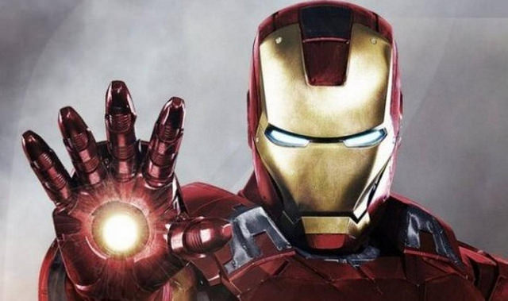

鋼鐵人（英語：Iron Man），本名安東尼·愛德華·史塔克（英語：Anthony Edward Stark），暱稱東尼·史塔克（Tony Stark），是一位在漫威漫畫世界中的虛構漫畫超級英雄，第一代。鋼鐵人由史丹·李，賴瑞·理柏，唐·赫克與傑克·科比共同創造。鋼鐵人首次出現於《懸疑故事》（Tales of Suspense）第39期（1963年三月），臺灣老三台於1970年代曾以《萬能金鋼》之名播出此作的改編卡通。最大敵人為滿大人。
在IGN於2011年評出的100漫畫英雄中鋼鐵人排名第12位。
第二代鋼鐵人，英雄名稱「鋼鐵心」（英語：Ironheart），自2016年正史漫畫中，由非洲裔少女蕾蕾·威廉斯接續擔任。根據原著描述，蕾蕾是一位科學天才，15歲就考進麻省理工學院，自行創作出鋼鐵裝；隨後被東尼史塔克注意到，決定招攬她來取代自己的位置。
